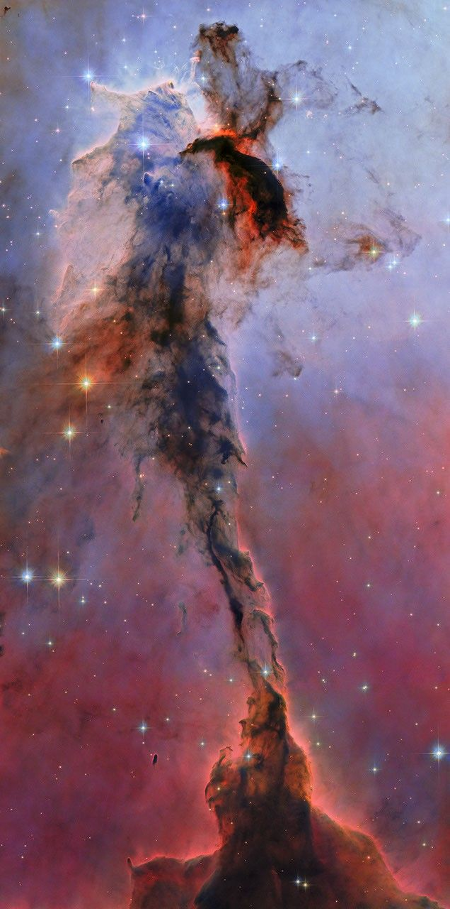
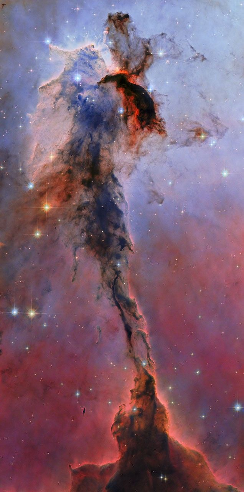

Launch of nasa's SpaceX CRS-32
NASA and SpaceX are targeting 4:15 a.m. EDT, Monday, April 21, for the next launch to deliver science investigations, supplies, and equipment to the International Space Station. This is the 32nd SpaceX commercial resupply services mission to the orbiting laboratory for the agency. Live coverage begins at 3:55 a.m. EDT.
Mission Coverage
Live Mission Updates
1 hour ago
NASA’s SpaceX CRS-32: Dragon Launches at 4:15 a.m. EDT
2 hours ago
NASA’s SpaceX CRS-32: Launch Coverage Underway
3 days ago
NASA Sets Coverage for SpaceX 32nd Station Resupply Launch, Arrival
5 months ago
SpaceX Dragon Cargo Spacecraft Docks to Harmony Module
5 months ago
Dragon Approaching Station on 31st Cargo Mission
5 months ago
NASA’s SpaceX CRS-31: Dragon Launches at 9:29 p.m. EST
5 months ago
NASA’s SpaceX CRS-31: Dragon Launches at 9:29 p.m. EST
5 months ago
NASA’s SpaceX CRS-31: Launch Coverage Underway
5 months ago
NASA Sets Coverage for SpaceX 31st Station Resupply Launch, Arrival
5 months ago
NASA, SpaceX Update Space Station Resupply Launch Date
 
